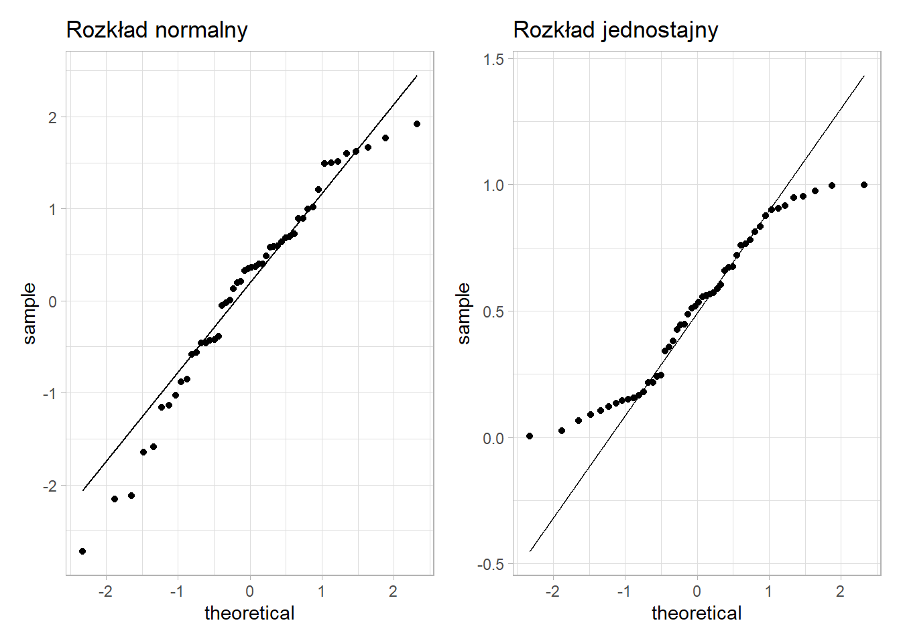
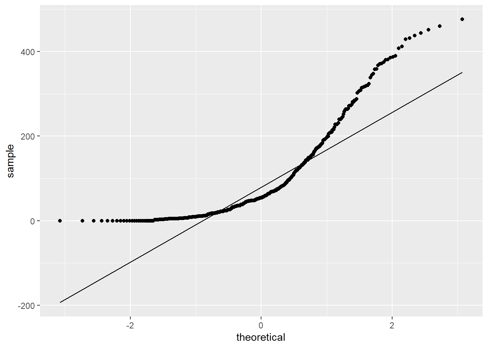

2 Testowanie hipotez
2.1 Wprowadzenie
Do rozwiązania wybranych zagadnień analizy statystycznej wystarczą metody weryfikacji hipotez statystycznych. Taki proces można przedstawić w następujących krokach:
- Sformułowanie dwóch wykluczających się hipotez - zerowej \(H_0\) oraz alternatywnej \(H_1\)
- Wybór odpowiedniego testu statystycznego
- Określenie dopuszczalnego prawdopodobieństwo popełnienia błędu I rodzaju (czyli poziomu istotności \(\alpha\))
- Podjęcie decyzji
Wymienione powyżej nowe pojęcia zostaną wyjaśnione poniżej.
2.2 Hipoteza statystyczna
Przypuszczenie dotyczące własności analizowanej cechy, np. średnia w populacji jest równa 10, rozkład cechy jest normalny.
Formułuje się zawsze dwie hipotezy: hipotezę zerową (\(H_0\)) i hipotezę alternatywną (\(H_1\)). Hipoteza zerowa jest hipotezą mówiącą o równości:
\(H_0: \bar{x}=10\)
Z kolei hipoteza alternatywna zakłada coś przeciwnego:
\(H_1: \bar{x}\neq 10\)
Zamiast znaku nierówności (\(\neq\)) może się także pojawić znak mniejszości (\(<\)) lub większości (\(>\)).
2.3 Poziom istotności i wartość p
Hipotezy statystyczne weryfikuje się przy określonym poziomie istotności \(\alpha\), który wskazuje maksymalny poziom akceptowalnego błędu (najczęściej \(\alpha=0,05\)).
Większość programów statystycznych podaje w wynikach testu wartość p. Jest to najostrzejszy poziom istotności, przy którym możemy odrzucić hipotezę \(H_0\). Jest to rozwiązanie bardzo popularne, ale nie pozbawione wad. Dokładny opis potencjalnych zagrożeń można znaleźć w artykule.
Generalnie jeśli \(p < \alpha\) - odrzucamy hipotezę zerową.
2.4 Testy statystyczne
W zależności od tego co chcemy weryfikować należy wybrać odpowiedni test. Tabela poniżej przedstawia dosyć wyczerpującą klasyfikację testów pobraną ze strony.

2.5 Zbiór danych
Będziemy działać na zbiorze danych dotyczącym pracowników przedsiębiorstwa. Poniżej znajduje się opis cech znajdujących się w tym zbiorze,
- id - kod pracownika
- plec - płeć pracownika (0 - mężczyzna, 1 - kobieta)
- data_urodz - data urodzenia
- edukacja - wykształcenie (w latach nauki)
- kat_pracownika - grupa pracownicza (1 - specjalista, 2 - menedżer, 3 - konsultant)
- bwynagrodzenie - bieżące wynagrodzenie
- pwynagrodzenie - początkowe wynagrodzenie
- staz - staż pracy (w miesiącach)
- doswiadczenie - poprzednie zatrudnienie (w miesiącach)
- zwiazki - przynależność do związków zawodowych (0 - nie, 1 - tak)
- wiek - wiek (w latach)
2.6 Test niezależności
Za pomocą testu niezależności \(\chi^2\) (chi-kwadrat) można sprawdzić czy pomiędzy dwiema cechami jakościowymi występuje zależność. Układ hipotez jest następujący:
- \(H_0:\) zmienne są niezależne,
- \(H_1:\) zmienne nie są niezależne.
W programie R test niezależności można wywołać za pomocą funkcji chisq.test() z pakietu stats. Jako argument tej funkcji należy podać tablicę kontyngencji. W przypadku operowania na danych jednostkowych można ją utworzyć poprzez funkcję table(). Jeżeli wprowadzamy liczebności ręcznie to należy zadbać o to, żeby wprowadzony obiekt był typu matrix.
Przykład
Czy pomiędzy zmienną płeć, a zmienną przynależność do związków zawodowych istnieje zależność?
W pierwszym kroku określamy hipotezy badawcze:
\(H_0\): pomiędzy płcią a przynależnością do związków nie ma zależności
\(H_1\): pomiędzy płcią a przynależnością do związków jest zależność
oraz przyjmujemy poziom istotności - weźmy standardową wartość \(\alpha = 0,05\).
W pierwszej kolejności popatrzmy na tabelę krzyżową (kontyngencji) zawierającą liczebności poszczególnych kombinacji wariantów.
##
## 0 1
## 0 194 64
## 1 176 40Wartości w tej tabeli nie wskazują na liczniejszą reprezentację jednej z płci w związkach zawodowych. Zweryfikujemy zatem wskazaną hipotezę zerową z wykorzystaniem testu \(\chi^2\).
##
## Pearson's Chi-squared test with Yates' continuity correction
##
## data: table(pracownicy$plec, pracownicy$zwiazki)
## X-squared = 2.3592, df = 1, p-value = 0.1245Przy poziomie istotności \(\alpha = 0,05\), wartości p (0.1245) jest większa od wartości \(\alpha\), zatem nie ma podstaw do odrzucenia hipotezy zerowej. Można stwierdzić, że nie ma zależności pomiędzy zmiennymi płeć i przynależność do związków zawodowych.
Przykład
Czy pomiędzy płcią, a grupami bieżącego wynagrodzenia zdefiniowanymi przez medianę istnieje zależność?
\(H_0\): pomiędzy płcią a grupami wynagrodzenia nie ma zależności
\(H_1\): pomiędzy płcią a grupami wynagrodzenia jest zależność
W pierwszej kolejności tworzymy nową cechą zamieniając cechę bwynagrodzenie na zmienną jakościową posiadającą dwa warianty: poniżej mediany i powyżej mediany.
pracownicy <- pracownicy %>%
mutate(bwyn_mediana=cut(x = bwynagrodzenie,
breaks = c(min(bwynagrodzenie),
median(bwynagrodzenie),
max(bwynagrodzenie)),
include.lowest = TRUE))
table(pracownicy$plec, pracownicy$bwyn_mediana)##
## [1.58e+04,2.89e+04] (2.89e+04,1.35e+05]
## 0 73 185
## 1 164 52W tym przypadku wygląd tablicy krzyżowej może sugerować występowanie zależności.
##
## Pearson's Chi-squared test with Yates' continuity correction
##
## data: table(pracownicy$plec, pracownicy$bwyn_mediana)
## X-squared = 104.8, df = 1, p-value < 2.2e-16Test \(\chi^2\) to potwierdza - mamy podstawy do odrzucenia hipotezy zerowej na korzyść hipotezy alternatywnej - istnieje zależność pomiędzy płcią, a grupami wynagrodzenia.
2.7 Test proporcji
Test proporcji pozwala odpowiedzieć na pytanie czy odsetki w jednej, dwóch lub więcej grupach różnią się od siebie istotnie. Dla jednej próby układ hipotez został przedstawiony poniżej:
- \(H_0: p=p_0\)
- \(H_1: p \neq p_0\) lub \(H_1: p > p_0\) lub \(H_1: p < p_0\)
Układ hipotez w przypadku dwóch prób jest następujący:
- \(H_0: p_1=p_2\)
- \(H_1: p_1 \neq p_2\) lub \(H_1: p_1 > p_2\) lub \(H_1: p_1 < p_2\)
Dla \(k\) badanych prób hipotezę zerową i alternatywną można zapisać w następująco:
- \(H_0: p_1=p_2=p3=...=p_k\)
- \(H_1: \exists \; p_i \neq p_j\)
W takim przypadku hipoteza alternatywna oznacza, że co najmniej jeden odsetek różni się istotnie od pozostałych.
Funkcja prop.test z pakietu stats umożliwia przeprowadzanie testu proporcji w programie R. Jako argumenty należy podać wektor, który zawiera licznik badanych odsetków - x, oraz wektor zawierający wartości mianownika - n. W przypadku jednej próby należy jeszcze dodać argument p, którego wartość oznacza weryfikowany odsetek.
Przykład
Wysunięto przypuszczenie, że palacze papierosów stanowią jednakowy odsetek wśród mężczyzn i kobiet. W celu sprawdzenia tej hipotezy wylosowano 500 mężczyzn i 600 kobiet. Okazało się, że wśród mężczyzn było 200 palaczy, a wśród kobiet 250.
\(H_0\): odsetek palaczy wg płci jest taki sam
\(H_1\): odsetek palaczy różni się wg płci
##
## 2-sample test for equality of proportions with continuity correction
##
## data: c(200, 250) out of c(500, 600)
## X-squared = 0.24824, df = 1, p-value = 0.6183
## alternative hypothesis: two.sided
## 95 percent confidence interval:
## -0.07680992 0.04347659
## sample estimates:
## prop 1 prop 2
## 0.4000000 0.4166667Przy poziomie istotności 0,05 nie ma podstaw do odrzucenia H0 - odsetek palaczy jest taki sam w grupach płci.
2.8 Testowanie normalności - test Shapiro-Wilka
Testy parametryczne z reguły wymagają spełnienia założenia o normalności rozkładu. W celu weryfikacji tego założenia należy wykorzystać jeden z testów normalności.
W celu formalnego zweryfikowania rozkładu cechy można wykorzystać test Shapiro-Wilka. Układ hipotez z tym teście jest następujący:
- \(H_0: F(x) = F_0(x)\) - rozkład cechy ma rozkład normalny
- \(H_1: F(x) \neq F_0(x)\) - rozkład cechy nie ma rozkładu normalnego
W przeprowadzonych dotychczas symulacjach wykazano, że test Shapiro-Wilka ma największą moc spośród testów normalności, niemniej jego ograniczeniem jest maksymalna liczba obserwacji, która wynosi 50001.
W programie R test Shapiro-Wilka można uruchomić za pomocą funkcji shapiro.test() jako argument podając wektor wartości liczbowych, który chcemy zweryfikować.
2.9 Testowanie normalności - wykres kwantyl-kwantyl
Normalność rozkładu może także zostać zweryfikowana poprzez utworzenie wykresu przedstawiającego porównanie wartości oryginalnych oraz odpowiadającym im wartości pochodzących z rozkładu normalnego. Dodatkowo prowadzona jest linia regresji pomiędzy otrzymanymi wartościami. Punkty przebiegające w pobliżu tej linii oznaczają, że rozkład tej cechy jest normalny.
Na wykresie przedstawiony jest wykres kwantyl-kwantyl dla 50 wartości wylosowanych z rozkładu normalnego i z rozkładu jednostajnego.

Jak można zauważyć punkty na wykresie po lewej stronie nie odbiegają znacząco od linii prostej, zatem można przypuszczać, że rozkład tej cechy jest normalny. Z kolei na wykresie po prawej stronie obserwuje się odstępstwo od rozkładu normalnego - wartości na krańcach linii są od niej oddalone.
Przykład
Czy cecha doświadczenie ma rozkład normalny? Sprawdź za pomocą odpowiedniego testu oraz wykresu kwantyl-kwantyl.
\(H_0\): doświadczenie ma rozkład normalny
\(H_1\): doświadczenie nie ma rozkładu normalnego
##
## Shapiro-Wilk normality test
##
## data: pracownicy$doswiadczenie
## W = 0.8136, p-value < 2.2e-16Na poziomie \(\alpha = 0,05\) Odrzucamy \(H_0\) (p < \(\alpha\)) - doświadczenie nie ma rozkładu normalnego. Sprawdźmy jeszcze jak te wartości wyglądają na wykresie kwantyl-kwantyl.

2.10 Testowanie wariancji - test Bartletta
Oprócz założenia o normalności, niektóre metody statystyczne wymagają także równości wariancji.
Jeśli chcemy sprawdzić homogeniczność wariancji w dwóch lub więcej grupach to należy skorzystać z testu Bartletta:
- \(H_0: s^2_1=s^2_2= s^2_3 =...=s^2_k\)
- \(H_1: \exists_{i,j\in\{1,..,k\}} \; s^2_i \neq s^2_j\)
Funkcja bartlett.test() w programie R umożliwia zastosowanie tego testu. Argumenty do tej funkcji można przekazać na dwa sposoby. Pierwszy polega na przypisaniu do argumentu x wektora zawierającego wartości cechy, a do argumentu g wektora zawierającego identyfikatory poszczególnych grup. Drugi sposób to zadeklarowanie formuły w postaci zmienna_analizowa ~ zmienna_grupująca oraz podanie zbioru danych przypisanego do argumentu data.
Przykład
Sprawdźmy czy wariancje zmiennej doświadczenie w grupach płci są takie same.
\(H_0\): wariancje doświadczenia są takie same w grupach płci
\(H_1\): wariancje doświadczenia nie są takie same w grupach płci
Funkcję weryfikującą \(H_0\) można zapisać na dwa sposoby - wynik zawsze będzie taki sam.
##
## Bartlett test of homogeneity of variances
##
## data: pracownicy$doswiadczenie and pracownicy$plec
## Bartlett's K-squared = 4.7659, df = 1, p-value = 0.02903##
## Bartlett test of homogeneity of variances
##
## data: pracownicy$doswiadczenie by pracownicy$plec
## Bartlett's K-squared = 4.7659, df = 1, p-value = 0.02903Przyjmując poziom istotności \(\alpha = 0,05\) odrzucamy hipotezę zerową stwierdzając, że wariancje różnią się w grupach płci. Z kolei dopuszczając niższy poziom istotności \(\alpha = 0,01\) podjęlibyśmy decyzję o braku podstaw do odrzucenia \(H_0\) i nieistotnej różnicy pomiędzy grupami.
2.11 Testowanie średnich
W przypadku testowania wartości przeciętnych należy wprowadzić pojęcie prób zależnych i niezależnych:
próby zależne (paired) - analizowane są te same jednostki, ale różne cechy.
próby niezależne (unpaired) - analizowane są różne jednostki, ale ta sama cecha.
W zależności od tego czy spełnione są odpowiednie założenia dotyczące normalności cechy oraz równości wariancji należy wybrać odpowiedni test według poniższego diagramu.

2.11.1 Test t-średnich
Weryfikacja równości średnich może odbywać się na zasadzie porównania wartości średniej w jednej grupie z arbitralnie przyjętym poziomem lub w dwóch różnych grupach. W pierwszym przypadku rozważamy układ hipotez:
- \(H_0: m = m_0\)
- \(H_1: m \neq m_0\) lub \(H_1: m < m_0\) lub \(H_1: m > m_0\)
natomiast w drugim przypadku hipotezy będą wyglądać następująco:
- \(H_0: m_1 = m_2\)
- \(H_1: m_1 \neq m_2\) lub \(H_1: m_1 < m_2\) lub \(H_1: m_1 > m_2\)
Alternatywnie hipotezę zerową można zapisać jako \(m_1 - m_2 = 0\) czyli sprawdzamy czy różnica pomiędzy grupami istotnie różni się od zera.
W funkcji t.test() z pakietu stats w przypadku jednej próby należy podać argument x czyli wektor z wartościami, które są analizowane oraz wartość, z którą tą średnią porównujemy (argument mu, który domyślnie jest równy 0). Dodatkowo w argumencie alternative wskazujemy jaką hipotezę alternatywną bierzemy pod uwagę.
Dla weryfikacji równości średniej w dwóch próbach należy dodać argument y z wartościami w drugiej próbie. W tym przypadku mamy także możliwość określenia czy próby są zależne (argument paired) lub czy wariancja w obu próbach jest taka sama (var.equal). Jeżeli wariancje są różne to program R przeprowadzi test t Welcha i liczba stopni swobody nie będzie liczbą całkowitą.
2.11.2 ANOVA
W przypadku większej liczby grup stosuje się jednoczynnikową analizę wariancji (ANOVA). Ta analiza wymaga spełnienia założenia o normalności rozkładu i równości wariancji w badanych grupach. Układ hipotez jest następujący:
- \(H_0: m_1 = m_2 = m_3 = ... = m_k\)
- \(H_1: \exists_{i,j\in\{1,..,k\}} \; m_i \neq m_j\)
Za pomocą funkcji aov() można w R przeprowadzić jednoczynnikową analizę wariancji. Jako argument funkcji należy podać formułę przedstawiającą zależność zmiennej badanej do zmiennej grupującej wykorzystując w tym celu symbol tyldy (~) w następującym kontekście: zmienna_analizowana ~ zmienna_grupująca. Przy takim zapisie należy także w argumencie data podać nazwę zbioru danych.
W porównaniu do wcześniej opisanych funkcji, aov() nie zwraca w bezpośrednim wyniku wartości p. Aby uzyskać tę wartość należy wynik działania tej funkcji przypisać do obiektu, a następnie na nim wywołać funkcję summary().
W przypadku odrzucenia hipotezy zerowej można przeprowadzić test Tukeya w celu identyfikacji różniących się par wykorzystując funkcję TukeyHSD() i jako argument podając obiekt zawierający wynik ANOVA.
W sytuacji, w której założenia użycia testu parametrycznego nie są spełnione, należy skorzystać z testów nieparametrycznych. W przypadku testowania miar tendencji centralnej różnica pomiędzy testami parametrycznymi a nieparametrycznymi polega na zastąpieniu wartości średniej medianą. Z punktu widzenia obliczeń w miejsce oryginalnych wartości cechy wprowadza się rangi czyli następuje osłabienie skali pomiarowej - z ilorazowej na porządkową.
2.11.3 Test Wilcoxona
Test Wilcoxona jest nieparametryczną wersją testu t. Hipotezy w tym teście dotyczą równości rozkładów:
- \(H_0: F_1=F_2\)
- \(H_1: F_1 \neq F_2\)
Wartość statystyki testowej będzie zależna od typu testu, natomiast w R funkcja, której należy użyć to wilcox.test(). Argumenty tej funkcji są takie same jak w przypadku testu t.
2.11.4 Test Kruskala-Wallisa
Z kolei test Kruskala-Wallisa jest nieparametrycznym odpowiednikiem ANOVA. Hipotezy są następujące:
- \(H_0: F_1=F_2=F_3=...=F_k\)
- \(H_1: \exists_{i,j\in\{1,..,k\}} \; F_i \neq F_j\)
W programie R korzysta się z funkcji kruskal.test(), która przyjmuje takie same argumenty jak funkcja do metody ANOVA aov(). Główną różnicą jest sposób podawania wyniku testu, ponieważ w tym przypadku od razu otrzymujemy wartość p. W przypadku odrzucenia hipotezy zerowej należy sprawdzić, które grupy różnią się między sobą. Można to zrobić za pomocą funkcji pairwise.wilcox.test().
Przykład
Sprawdzimy czy średnie doświadczenie w grupach płci jest takie same.
\(H_0\): średnie doświadczenie w grupach płci jest takie samo
\(H_1\): średnie doświadczenie w grupach płci nie jest takie samo
W związku z tym, że badana cecha nie ma rozkładu normalnego zostanie przeprowadzony test Wilcoxona. Mamy tutaj do czynienia z testem dla prób niezależnych - badana jest jedna cecha (doświadczenie) w ramach rozłącznych grup płci.
##
## Wilcoxon rank sum test with continuity correction
##
## data: pracownicy$doswiadczenie by pracownicy$plec
## W = 36295, p-value = 1.372e-08
## alternative hypothesis: true location shift is not equal to 0Przyjmując poziom istotności \(\alpha = 0,05\) odrzucamy \(H_0\) - średnie doświadczenie nie jest takie samo.
Przykład
Czy początkowe i bieżące wynagrodzenie różni się od siebie w sposób istotny?
\(H_0\): średnie początkowe i bieżące wynagrodzenie jest takie samo
\(H_1\): średnie początkowe i bieżące wynagrodzenie nie jest takie samo
W pierwszej kolejności weryfikujemy normalność rozkładu analizowanych cech.
##
## Shapiro-Wilk normality test
##
## data: pracownicy$pwynagrodzenie
## W = 0.71535, p-value < 2.2e-16##
## Shapiro-Wilk normality test
##
## data: pracownicy$bwynagrodzenie
## W = 0.77061, p-value < 2.2e-16Wynagrodzenie w tym zbiorze danych zdecydowanie nie przypomina rozkładu normalnego. W tym przypadku analizujemy próby zależne - badamy dwie różne cechy dla tych samych jednostek (obserwacji).
##
## Wilcoxon signed rank test with continuity correction
##
## data: pracownicy$pwynagrodzenie and pracownicy$bwynagrodzenie
## V = 0, p-value < 2.2e-16
## alternative hypothesis: true location shift is not equal to 0Na podstawie podanej wartości p odrzucamy \(H_0\) - średnie początkowe i bieżące wynagrodzenie różni się od siebie istotnie statystycznie.
Przykład
Analogicznie można także sprawdzić czy np. doświadczenie różni się w ramach więcej niż dwóch grup - w takim przypadku rozpatrujemy głównie próby niezależne.
\(H_0\): średnie doświadczenie w grupach kategorii pracownika jest takie same
\(H_1\): średnie doświadczenie w grupach kategorii pracownika nie jest takie same - co najmniej jedna para jest różna
##
## Kruskal-Wallis rank sum test
##
## data: pracownicy$doswiadczenie by pracownicy$kat_pracownika
## Kruskal-Wallis chi-squared = 57.466, df = 2, p-value = 3.322e-13Przyjmując poziom istotności \(\alpha = 0,05\) odrzucamy hipotezę zerową - co najmniej jedna para kategorii pracownika różni się pod względem średniego wynagrodzenia.
W przypadku liczniejszych prób można wykorzystać test Kołmogorowa-Smirnova.↩